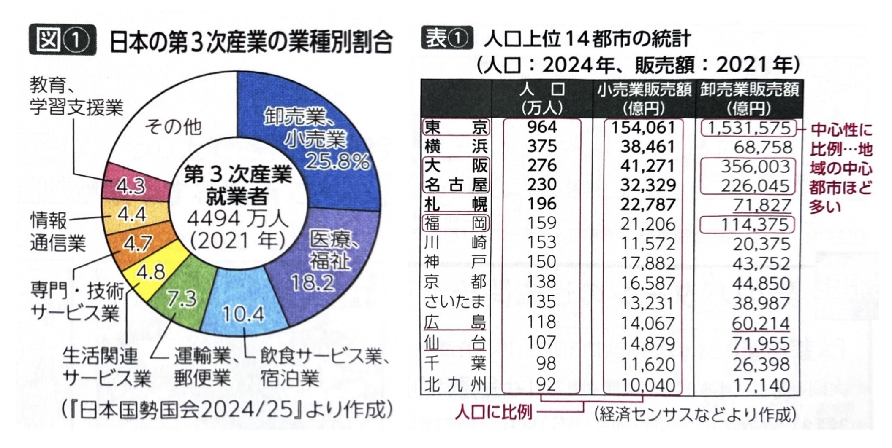
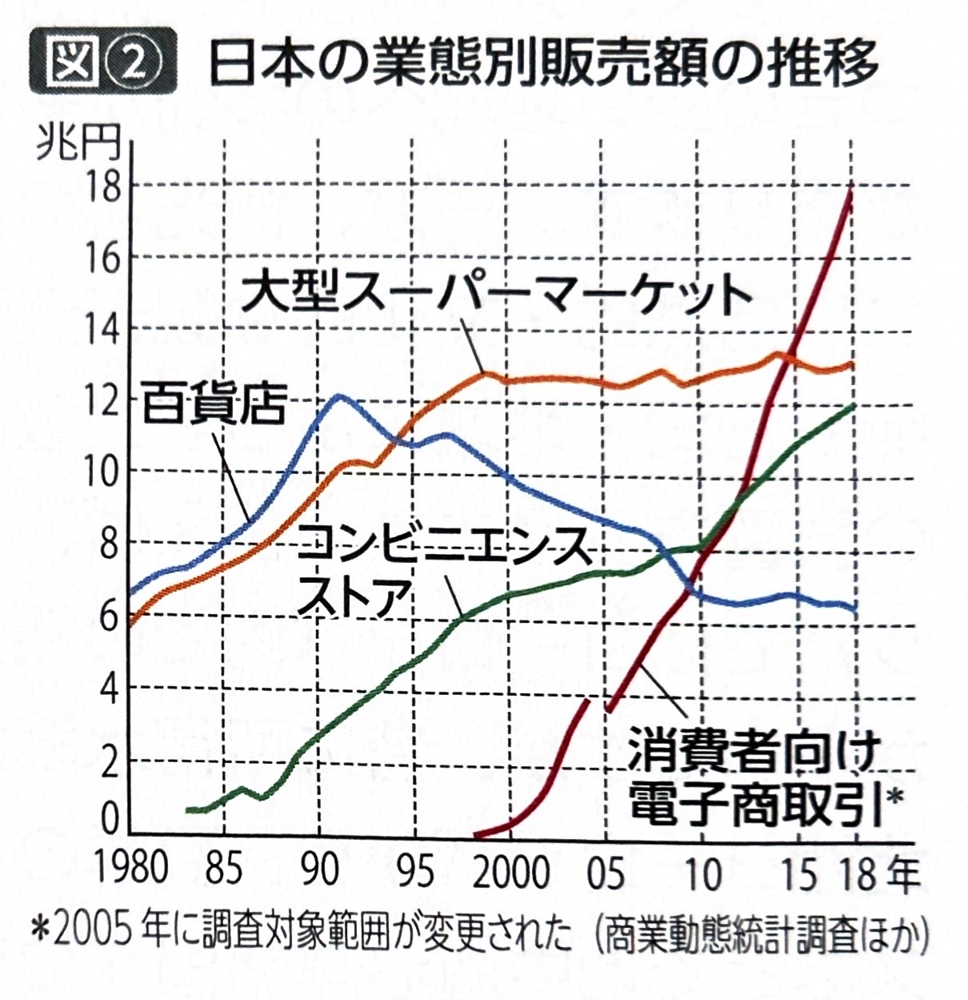
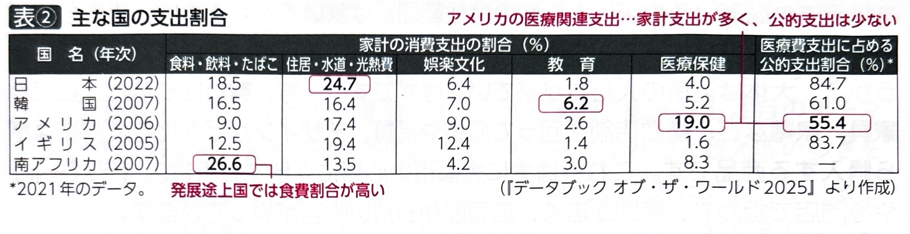
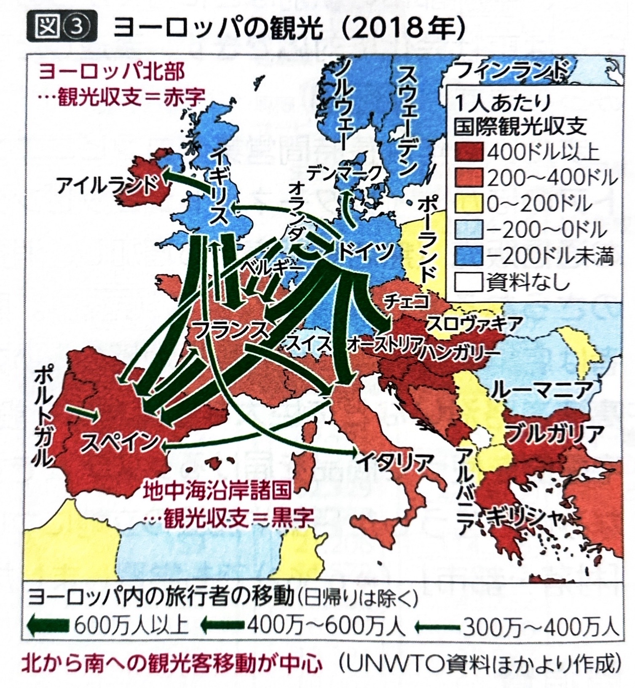
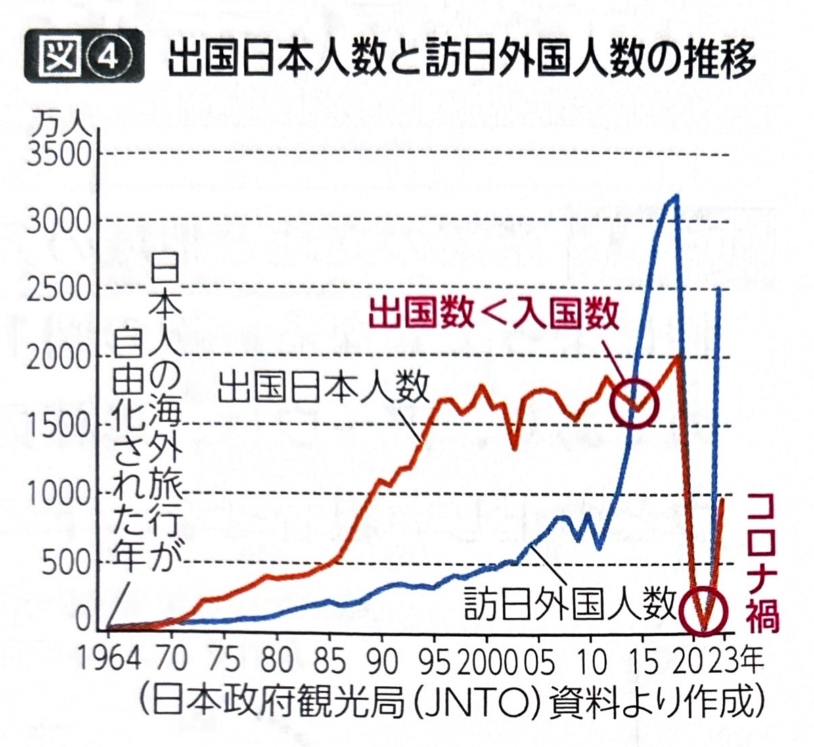
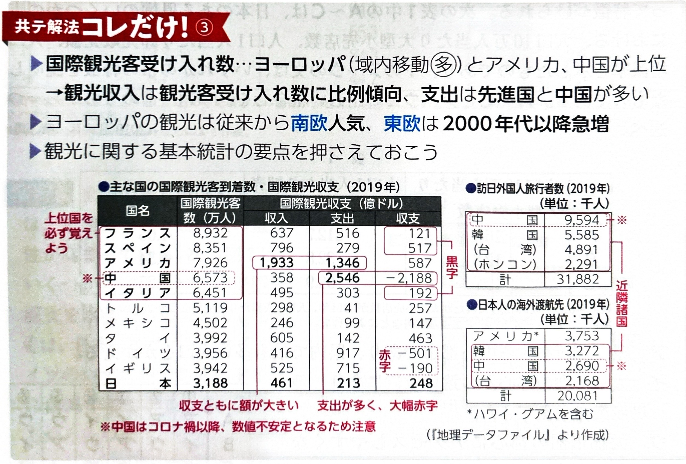

第8章 商業・観光、交通、貿易 - 商業・観光業
ポイント総復習
1. 商業の分類（卸売業と小売業）
日本をはじめ多くの国で、第3次産業の中で商業の従事者が多い傾向があります。商業は大きく「小売業」と「卸売業」に分けられます。
| 分類 | 特徴と販売額の傾向 |
|---|---|
| 小売業 | 消費者に商品を販売する業態。 販売額は基本的に人口が多い都市ほど多くなりやすい（人口に比例）。 |
| 卸売業 | 生産者と小売業者を仲介し、企業間取引を行う業態。 販売額は人口の多さよりも、企業が集積する中心都市であるかどうか（三大都市や広域中心都市など）に強く影響される。 ※販売額の規模は 小売業：卸売業 ≒ 1：3 となり、卸売業の方がはるかに大きい。 |

2. 商品と店舗、消費行動の変化
商品の性質によって、扱う店舗の立地や商圏（客が来る範囲）が異なります。
- 最寄り品：食料品や日用品など。商圏は狭い（近所）。
- 買い回り品：衣服や家具、家電など比較検討して購入する商品。百貨店や専門店で扱われ、商圏は広い。
【消費行動の変化】
- モータリゼーション（車社会化）の進展により、郊外の主要道路沿いにある大型商業施設でのワンストップショッピング（まとめ買い）が普及しました。
- その反面、車社会化に対応できなかった中小都市の駅前商店街などは衰退し、「シャッター通り」となる事例も多くみられます。
- 近年は通信販売（インターネットショッピング）も増加しており、それらを支える巨大な物流倉庫は地価の安い郊外の高速道路沿いなどに立地しています。
【国別の消費支出の傾向】
- 発展途上国では食費の割合が高くなります。
- アメリカは公的医療保険制度が定着していないため、家計支出における医療費の割合が高いのが特徴です。
- 医療や社会福祉関連の公的支出（政府による支出）の割合は、北欧諸国などの福祉大国で高くなっています。


3. 観光業
観光旅行は所得水準が高い国からの旅行者が多く、経済的な結びつきが強い地域間の移動が多い傾向があります。
ヨーロッパの観光
- ヨーロッパでは域内での旅行者が多いですが、特に所得が高い北西ヨーロッパから、地中海沿岸諸国への移動（夏のバカンス等）が盛んです。
- そのため、国際観光収支はヨーロッパ北部で赤字（支出超過）、地中海沿岸諸国で黒字（収入超過）になる傾向があります。
- 冷戦終結後（1990年頃以降）は、西欧から東欧への旅行も増加しています。

日本の観光
- アウトバウンド（日本人の海外旅行）：円高が進んだ1980年代後半から急増しました。
- インバウンド（訪日外国人旅行者）：2010年代以降、LCCの普及、円安、ビザ緩和などを背景に急増し、2015年にはインバウンド数がアウトバウンド数を上回りました。コロナ禍で一時激減しましたが、現在は再び増加しています。

新しい観光と課題
- オーバーツーリズム：観光客の急増による混雑、交通渋滞、ゴミ問題、環境破壊などの課題。
- グリーンツーリズム：自然豊かな農山漁村に滞在し、自然や文化、農業を体験する観光。
- エコツーリズム：自然環境や地域の歴史を学びながら、環境保全への理解を深める観光。

基礎問題（理解度チェック）
Q1. 商業の分類と特徴について、空欄を埋めなさい。
商業において、消費者に商品を販売する
の販売額は人口の多さに比例しやすいが、企業間取引を行う
の販売額は三大都市や広域中心都市など、その地域の
であるかどうかに強く影響される。
Q2. 商品と店舗について、空欄を埋めなさい。
日常的に近所の店で購入する食料品などを
といい、商圏は狭い。一方、百貨店などで比較検討して購入する衣服などを
といい、商圏は広い。近年は車社会化により、郊外の大型商業施設での
が普及し、中心部の商店街が衰退する事例もみられる。
Q3. 観光業の動向について、空欄を埋めなさい。
観光について、ヨーロッパでは夏季のバカンスなどで北部から
沿岸への旅行者が多く、北部は観光収支が赤字になりやすい。日本では2010年代以降、訪日外国人である
が急増した。しかし、観光客の過度な集中により環境破壊などが生じる
が新たな課題となっている。
Q4. 日本の商業において、販売額の規模を比較すると、消費者に直接販売する小売業の販売額の方が、企業間取引を行う卸売業の販売額よりも大きくなっている。
Q5. 家計の消費支出の割合や公的支出を国別に比較すると、発展途上国では食費の割合が高く、アメリカでは公的医療保険制度が定着していないため医療費の自己負担割合が高い傾向がある。